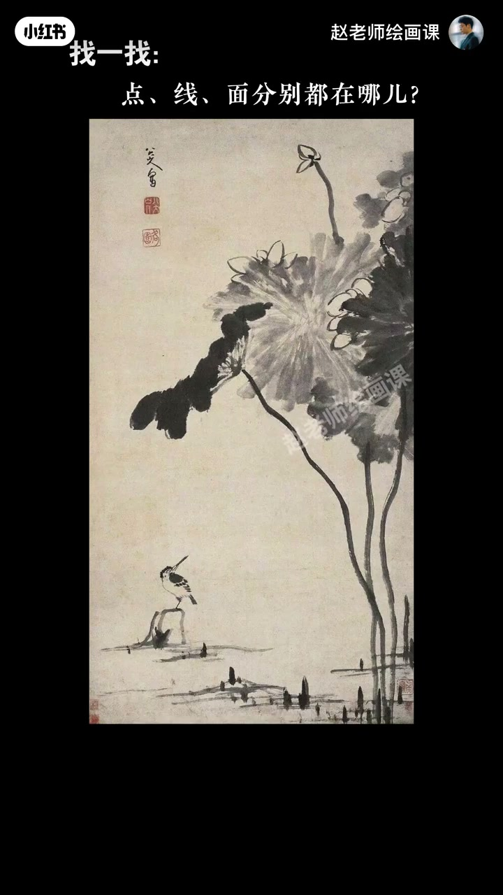
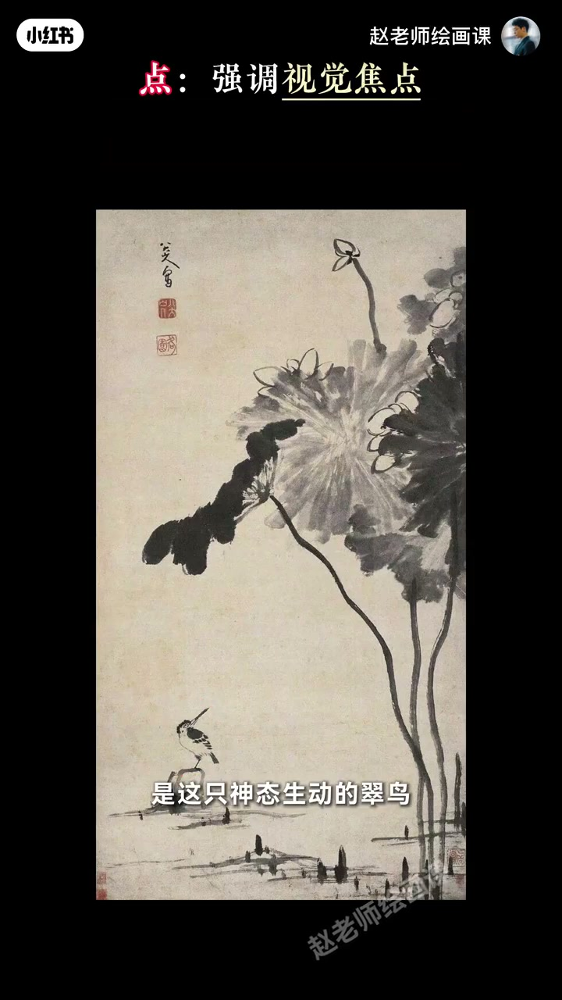
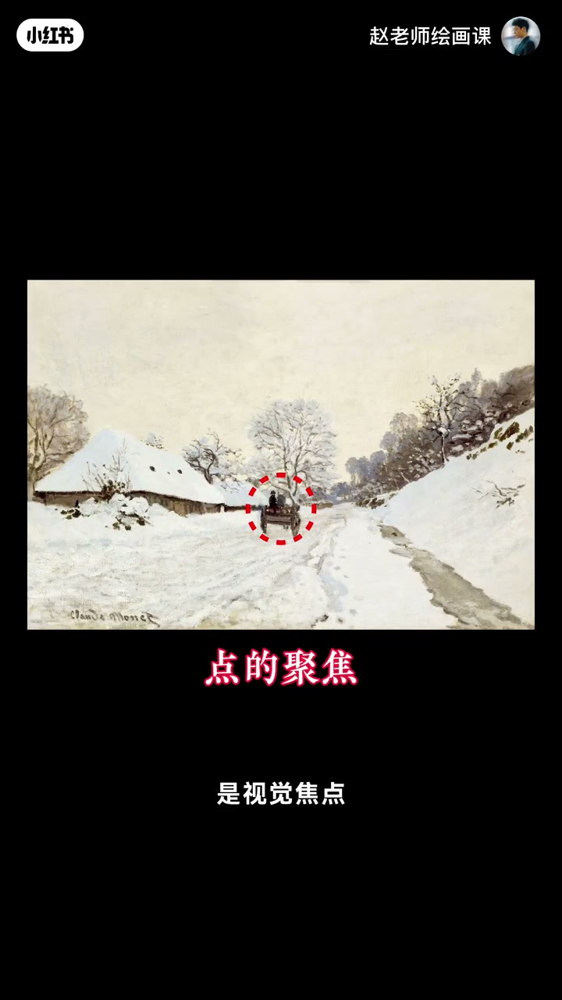
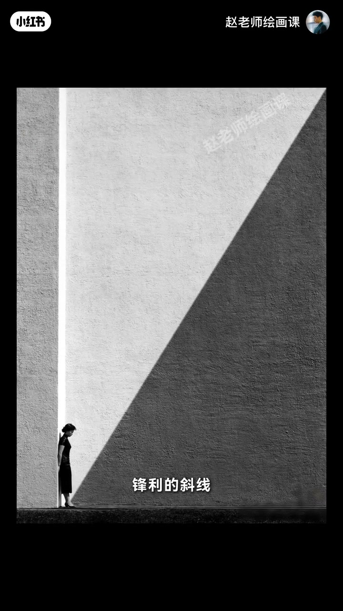

内容要点
画面总差口气，大师却经典耐看，问题常在点线面关系。八大山人《荷花翠鸟图》：印章远看可连成线；狭长合印可当粗而有指向的线——身份随功能转换。拆解：点＝视觉焦点（翠鸟）；线＝引导视线（荷梗、叶茎、落款如箭头）；面＝分割空间营造氛围（荷叶与留白水面一实一虚，空旷孤寂）。广阔河景中渺小却极具个性的鸟，讲述孤独清高的故事。莫奈雪景马车为点、路屋为线、天地面为面；何藩斜线加黑块放大悲剧，光带引导希望。语法：点焦点、线引导、面氛围。
知识结构
点线面身份可随距离与造型功能转换。
鸟＝点；梗茎款＝线；叶与留白＝面。
莫奈／何藩同构；总结底层语法。
点抓焦点、线引视线、面造空间气氛——先把这三者分工说清，画面才有章可循。
00:00-01:11八大山人：先找点线面
点线面听着抽象，先看八大山人荷花翠鸟。印章小尖尖算点，但退远看整体它们连成线就充当线；重色合印是面，狭长有力的造型又像一条粗壮带指向性的线。
先理性这些转换，再拆解关系。00:35 标注画面可指认。

01:11-02:03点焦点、线引导、面氛围
点就是视觉焦点——神态生动的翠鸟。线负责引导视线：挺拔荷梗、下垂叶茎、上方落款，都像箭头把目光引向鸟。面用来营造氛围：大片荷叶与留白水面一实一虚，分隔空间、推远景深，共同营造空旷孤寂。
点线面共同作用下，渺小却极具个性的鸟讲述孤独而清高的故事。01:20。

02:03-03:30莫奈与何藩：同一套语法
莫奈：行驶小马车是焦点；道路房屋轮廓构成引导线；干净柔和的天空与雪地大面积营造静谧雪天气氛。摄影家何藩：锋利斜线强烈指向孤独女孩，逼近黑色块制造紧迫感，放大渺小失落与悲剧色彩；黑暗中一道光引导船夫，诠释对希望的探索。
总结：用点作视觉焦点，用线引导视线，用面分割空间和营造氛围——画画、拍照、设计通用。02:10／02:30。


完整转录（76段）
以下文本由 Whisper medium 模型自动转录，可能存在少量识别误差，已尽可能修正。
为什么你的画面总觉得乍口气
而大师作品总是经典耐看
问题就处在点线面关系上
这个词好像很抽象
没关系 我们来看画
这是明末国画大师八大山人的作品
荷花翠鸟图
大家来找找画中的点线面分别都在哪
这是我找到的
我猜可能有的同学会问
这些印章小尖尖不算点吗
算 但当我们退远来看整体
它们连成了线就充当了线的作用
那这块重色合印不是面吗
是 但你仔细看它狭长而有力的造型
是不是像一条非常粗壮的
又带有指向性的线
好 理性了这些
现在我们来拆解这幅画的点线面关系
点就是视觉焦点
毫无疑问是这只神态生动的翠鸟
而线负责引导视线
挺拔的河梗
下垂的夜镜
包括上方的落款
这些线都像箭头一样
把我们的目光引向那只鸟
最后面它可以用来营造氛围
大片的河液与留白的水面
一时一虚
巧妙地分隔了空间
又推远了景深
共同营造出一种空旷
孤寂的情绪氛围
广阔河景中的翠鸟
虽然渺小
但极具个性
在点线面关系的共同作用下
讲述了一个孤独而清高的故事
这是一种最经典的画面视觉结构之一
你看西方的莫奈也是这么做的
画中行驶的小马车是视觉焦点
道路和房屋的轮廓构成了引导线
把我们的视线引向马车
干净柔和的天空与雪地
大面积地营造出了静谧的雪天氛围
除了绘画自然少不了摄影
我国摄影大师何帆
就是运用这种关系的顶尖高手
锋利的斜线强烈地指向这个孤独的女孩
而逼近的黑色块
制造了一种紧迫感
将人物的渺小失落与悲剧色彩无限放大
黑暗中透出的一道光
引导着船夫前进
诠释着对希望的探索
同样的还有这些作品
我们来总结一下
用点作为视觉焦点
用线来引导视线
用面来分割空间和营造氛围
无论你是画画 拍照还是做设计
掌握了这套视觉艺术的底层余范
你的作品就会立刻变得
有章可循 耐人寻味
今天所讲的点线面关系
正是我这门
最后一段视觉艺术的底层余范
在这段视觉艺术的底层余范
今天所讲的点线面关系
正是我这门构成系统课
重点内容之一
如果你想彻底掌握这些
让作品高级好看的规律
欢迎你加入
我们课上见